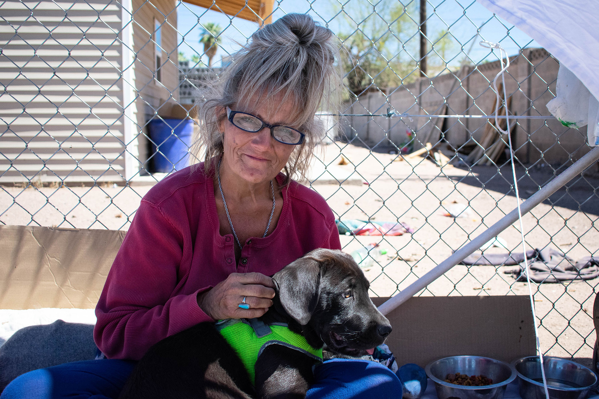
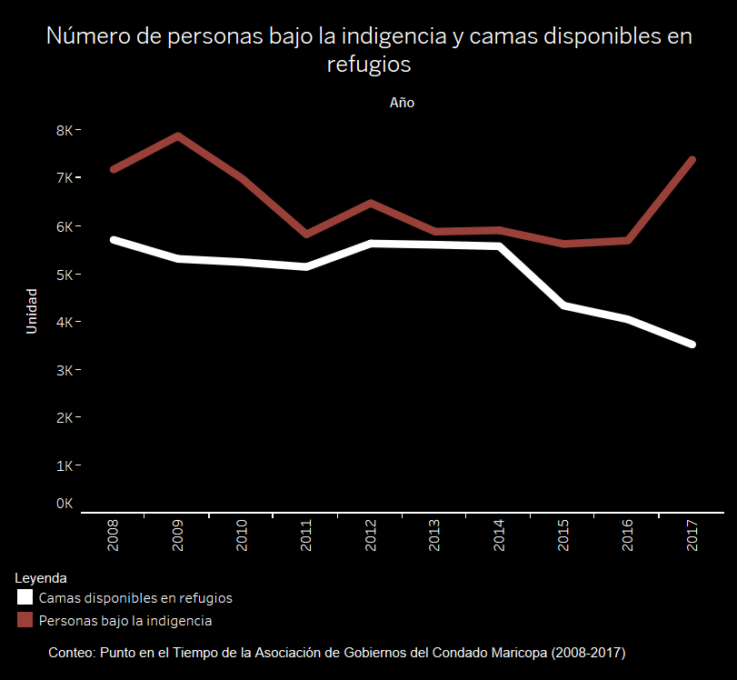

En el 2018, aproximadamente 2,600 personas vivían sin hogar en el Condado Maricopa, el condado más grande de Arizona con 24 ciudades, incluyendo a Phoenix.
Pero la indigencia es mucho más compleja de lo que las personas podrían asumir.
Más de la mitad de la población en Arizona vive en el Condado Maricopa, donde la indigencia aumentó 25 por ciento entre el 2016 y el 2017, según el reporte anual del Departamento de Seguridad Económica de Arizona.
SIN HOGAR da voz a las personas que viven desamparadas en Phoenix y a los desafíos y la incertidumbre que diariamente los agobia.
Cada año, El Departamento de Vivienda y Desarrollo Urbano (HUD por sus siglas en inglés) realiza un conteo nacional que se lleva a cabo en enero para cuantificar la indigencia.
La Asociación de Gobiernos del Condado Maricopa supervisa este conteo y Maggie Wong, supervisora dentro de la agencia, dice que es importante evaluar estos datos ya que solamente se realizan un día del año y no necesariamente representa todos los aspectos de la indigencia.
El número de camas en los refugios de Maricopa han visto un declive mientras el numero de indigentes va aumentando.
Conéctate en las redes sociales